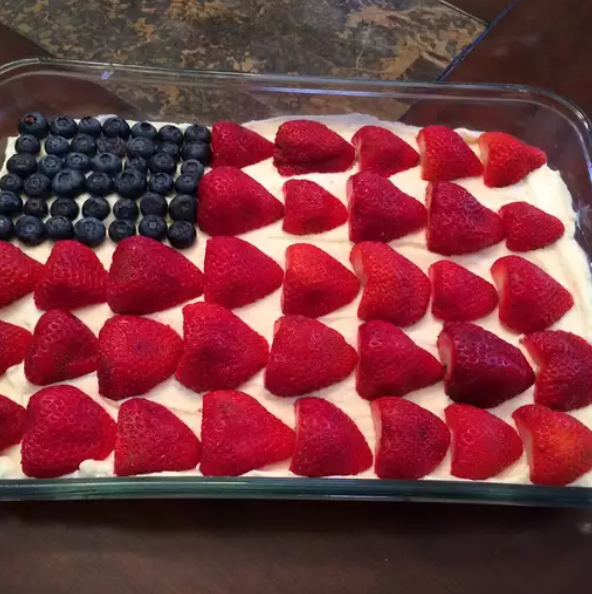

No-Bake Cheesecake

Description
You can make this lovely, sweet treat for 4th July or any patriotic holiday without turning on the oven! Besides the taste and light mousse-like texture, I think your guests will enjoy the iconic stars and stripes design provided by the fresh blueberries and strawberries
Ingredients
- 200g graham crackers or digestive biscuits, crushed
- 100g unsalted butter, melted
- 400g cream cheese, softened
- 100g powdered sugar
- 1 tsp vanilla extract
- 250ml heavy cream, whipped
- Fresh berries or fruit topping (optional)
Steps
- Mix the crushed biscuits with melted butter and press into the base of a springform pan. Chill in the fridge for 30 minutes.
- In a large bowl, beat the cream cheese, powdered sugar, and vanilla extract until smooth.
- Gently fold the whipped cream into the cream cheese mixture until well combined.
- Spread the filling evenly over the chilled crust and smooth the top.
- Refrigerate for at least 4 hours or overnight until set.
- Top with fresh berries or your favorite fruit topping before serving.
Home